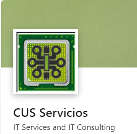
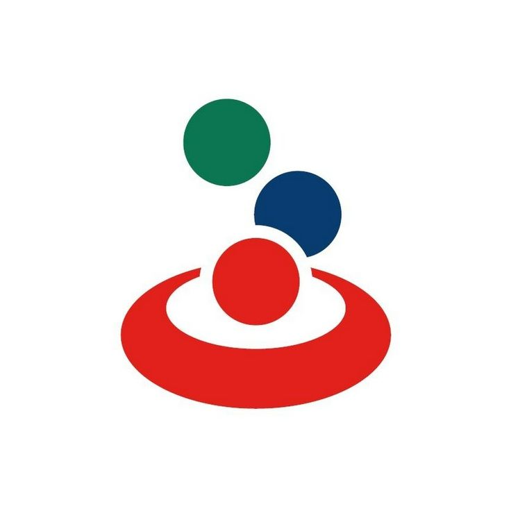
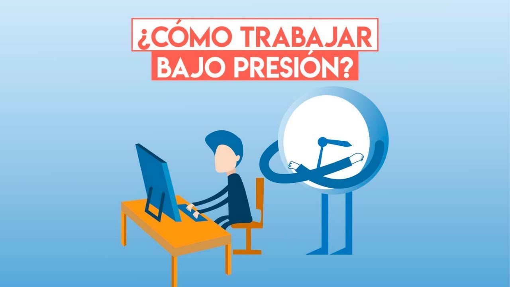

Experiencia Laboral
- Cus Servicios - Consultor AS/400

- Banesco - Especialisa II de Operaciones de Producción

Otras actividades
He desempeñado las siguientes funciones
- Activación y desactivación de Datagroups
- Identificación de Base de Datos en error
- Identificación de objetos en error
- Elaboración de informes, gráficos e indicadores de rendimiento
- Resincronización de objetos en error
- Identificación de Base de Datos en error
- Activación y desactivación de Datagroups
- Revisión de los trabajos inelegibles
- Revisión de la memoria ASP
- Revisión de discos activos
- Restauración y respaldo de objetos
- Mantenimiento de ambiente
- Realizar la correcta ejecución de los procesos en la plataforma iSeries a través de
opciones de menú Suicheo , Sign ON y Sign OFF, Cutoff en Suiche7B etc.
- -Realizar el envío de estatus de los distintos cierres IBSTDC Fideicomiso
EDI,Desembolso Masivo, Banesco Seguro, cierre de pruebas, Journal BAN-
CCC al personal de la áreas de negocios y TI involucrados. Realizar el monitoreo
y la gestión de los mensajes en la cola del operador en la plataforma iSeries de las
10 LPAR existentes, durante las 12 hrs de jornada de trabajo.
- Realizar la ejecución manual de cierres mensuales de fideicomiso y la carga de
lotes, para garantizar el proceso de cálculo y abono de intereses mensuales hacia
los asientos contables de cada una de las cuentas de las diferentes nóminas que
maneja la organización.
- Realizar la apertura, cierre, seguimiento y archivado diario de la Cámara de
Compensación Electrónica, a fin de garantizar la correcta transmisión vía FTP
hacia el Banco Central de Venezuela.
- Ejecución del proceso de resincronización de librerías
Cursos
- Ingles intermedio - CVA
- Operaciones Básicas AS/400 CUS Servicios
- Operaciones Avanzadas AS400 CUS Servicios
Habilidades y capacidades
- Facilidad para trabajar en grupo.
- Manejo de herramienta Office (Word, Excel, Power Point)

- Capacidad para trabajar bajo presión.

- Aprendizaje rápido
volver al inicio